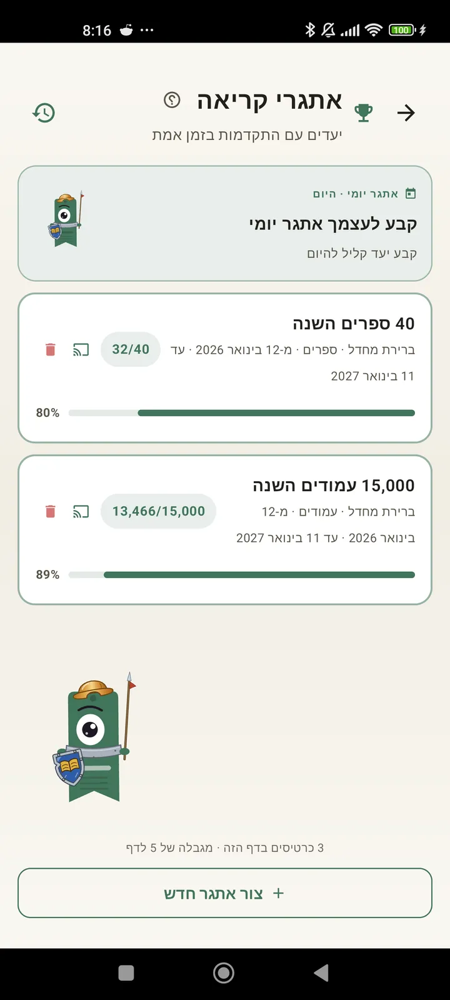

הכר את עצמך כקורא
אתגרים, בינגו, ווידג׳טים ועוד תכונות כדי להפיק את המרב מהקריאה שלך. חדש ב-3.7: ווידג׳טים של אתגרים ושל בינגו.

אתגרי קריאה
הצב יעדים לפי עמודים, רצפים או ז'אנרים. עד 15 אתגרים פעילים בחינם, ללא הגבלה עם Pro. ובנוסף אתגר יומי שאפשר להתאים אישית ושלא נספר במגבלה.

אתגר יומי
יעד חדש בכל יום. השלם את האתגר לפני חצות כדי לשמור על הרצף.

בינגו קריאה
שני בינגו חדשים בכל חודש עם משבצות לפי נושא. השלם שורות, עמודות או את כל הכרטיס.

סיכום שבועי
בכל יום שני, תמונת מצב של השבוע שלך: עמודים שנקראו, זמן כולל, רצף ואיך זה בהשוואה לשבוע הקודם.

סיכום חודשי
כשחודש נגמר, Lecturameter מסכמת אותו: עמודים, זמן, ספרים שהושלמו, הקצב שלך יום אחר יום והספר של החודש.

ווידג׳ט בינגו Pro
כרטיס הבינגו של החודש, תמיד מול העיניים, עם המשבצות שהשלמת והשורות שיצרת.

ווידג׳ט ספר חינם
ראה את הספר שאתה קורא ישר במסך הבית: עטיפה, כותרת, מחבר, עמודים ואחוז התקדמות, תמיד מעודכן. אפשר לשנות את גודלו כך שיתאים לכל מקום.
ברצינות אחי, האפליקציה מרגישה כמו טיפול. עברתי מלקרוא כמה עמודים ביום לבערך 20 עמודים ביום, ואני ממשיך להשתפרמשוב ממשתמש, שנשלח במייל

השוואה חודשית Pro
מבט מהיר על החודשים האחרונים שלך בלי לפתוח את האפליקציה. עמודות עם העמודים של כל חודש והחודש הנוכחי מודגש, כדי שתראה במבט אחד אם החודש הולך לך טוב יותר או פחות מהחודש הקודם.

ווידג׳ט אתגרים Pro
האתגרים הפעילים שלך וההתקדמות בהם במסך הבית. בחר אילו להציג ממסך האתגרים.